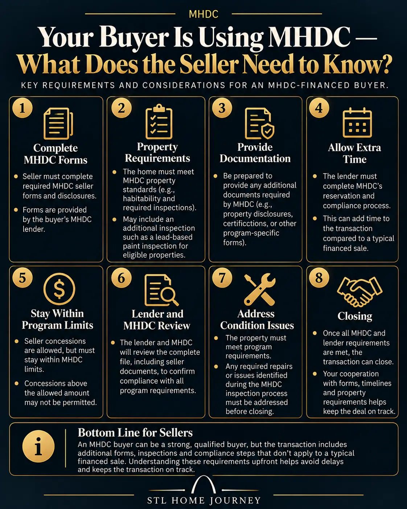

STL Home Journey
George Kindler · 314.435.1087
MHDC offers Missouri homebuyers mortgage programs with down-payment and closing-cost assistance. The headline sounds simple: qualified buyers can receive assistance equal to 4% of their first mortgage. The actual transaction is more complicated.
MHDC has income limits, purchase-price limits, property requirements, lender rules, deadlines, fees and—for First Place—documents that can involve the seller as well as the buyer.
I went through MHDC’s current First Place and Next Step operating materials to put those requirements into the order a homebuyer actually encounters them.
This guide is based on MHDC’s 2026 program documents. Program limits, rates and requirements can change, so verify current terms with an MHDC-certified lender before making a financial decision.
MHDC currently offers two primary homebuyer programs:
First Place is designed primarily for first-time homebuyers and qualified veterans. Buyers purchasing in certain federally targeted areas can also qualify without satisfying the normal first-time-buyer requirement.
Next Step is available to both first-time and repeat buyers and provides higher income limits.
Both programs have options involving down-payment assistance. MHDC loans are originated through certified lenders rather than directly by MHDC.
But there is an important distinction between saying “MHDC offers 4% assistance” and understanding what that means in an actual transaction.
MHDC treats the following as its St. Louis MSA for these limits: St. Louis County, St. Louis City, Jefferson County, Franklin County, Lincoln County, St. Charles County and Warren County.
| Household | Maximum Income |
|---|---|
| 1–2 people | $113,500 |
| 3+ people | $130,525 |
| Household | Maximum Income |
|---|---|
| 1–2 people | $136,200 |
| 3+ people | $158,900 |
| Property | Non-Targeted | Targeted / Next Step |
|---|---|---|
| 1-family | $566,354 | $692,211 |
| 2-family | $725,146 | $886,289 |
MHDC’s current limits became effective in May 2026.
Important: A neighborhood isn’t automatically “targeted” just because it’s located somewhere in the St. Louis MSA. Targeted status depends on the property’s census tract. MHDC provides a targeted-area resource and directs buyers to verify the census tract of the particular property.
The easiest way to understand the programs is to start with who they’re designed to serve.
First Place is primarily the first-time-homebuyer program. Qualified veterans and buyers purchasing in federally targeted areas can receive exceptions to the first-time-buyer requirement. MHDC defines and administers additional borrower, income, property and loan requirements through its operating rules.
Next Step expands MHDC financing to first-time and repeat buyers and uses the higher income and purchase-price limits shown above. That makes Next Step relevant to buyers who earn too much for regular First Place or who already own—or recently owned—a home.
MHDC describes both programs as offering affordable mortgage financing with an optional cash-assistance component for down payment and closing costs.

This deserves more explanation than the phrase 4% down-payment assistance suggests.

With the First Place DPA option, MHDC provides a second loan equal to 4% of the total first-mortgage amount. It can be used toward down payment and closing costs. It isn’t simply a 4% check that disappears at closing. The assistance is secured by a second mortgage.
If the borrower remains in the home and maintains the original loan, the second mortgage begins declining after year five. MHDC reduces the balance by 1/60 each month until it is completely forgiven at year ten.
| First mortgage | $300,000 |
| 4% DPA second mortgage | $12,000 |
| 1% origination fee (if lender charges max) | $3,000 |
| DPA minus that fee | $9,000 |
That’s effectively 3% of the first mortgage remaining after that particular charge.
But don’t automatically assume every MHDC borrower receives only 3%. The lender can charge less than 1% or no origination fee at all, and the buyer’s actual cash-to-close also depends on other closing costs, prepaid expenses, lender charges, seller credits, earnest money and the underlying mortgage.
The better question to ask an MHDC lender: “You’re showing me 4% DPA. After your origination and other lender/program charges, how much of that assistance actually reduces the cash I need to close?”
MHDC caps certain lender fees and prohibits others. The current First Place manual permits, among other things: origination fee up to 1%, application/processing/underwriting fees up to $1,100, a $275 funding fee, an $84 tax-service fee, and actual third-party costs for items such as appraisal, title work, surveys and certain inspections.
MHDC also expressly identifies fees that aren’t allowable under the program.
So comparing MHDC lenders shouldn’t stop at the interest rate. Ask for the complete fee structure.

MHDC doesn’t directly originate the mortgage. A certified lender determines whether the buyer and proposed loan satisfy the MHDC program and the requirements of the underlying mortgage. Depending on the loan, that underlying financing may involve FHA, VA, USDA Rural Development, Fannie Mae or Freddie Mac requirements as well.
Not every requirement attached to an MHDC transaction is necessarily an MHDC requirement. Some come from the underlying mortgage program.
The lender needs to determine which program fits based on first-time-buyer status, veteran status, household income, household size, property location, targeted-area status, purchase price and mortgage type.
A buyer shouldn’t assume that being over the regular First Place income limit automatically ends the conversation. Next Step has higher limits and allows repeat buyers.
MHDC eligibility isn’t only about the borrower. The property has to qualify too. Buyers should tell their agent they’re using MHDC before writing the offer, not after they’re already under contract.
The MHDC reservation process occurs after the lender has the necessary borrower information and an executed purchase contract. Once the lender creates the reservation, the applicable program, mortgage type, DPA option and targeted/non-targeted designation are identified and the rate is locked.
Being preapproved for an MHDC loan isn’t the same thing as having MHDC funds reserved for a particular property.
Current MHDC reservations expire 60 days after reservation approval. Before expiration, the loan must close and the complete compliance package must be submitted to MHDC. Extensions can be requested but are discretionary and may involve fees.
This is why contract timing matters. MHDC financing shouldn’t be treated as an irrelevant detail that can be introduced late in the transaction.
MHDC doesn’t simply move an existing reservation to the new address. If the buyer changes properties, the original reservation must be canceled and a new reservation made. The same problem occurs when switching certified lenders: the reservation isn’t transferable.
This is one of the least obvious parts of an MHDC First Place purchase. The financing doesn’t necessarily stay entirely between the buyer and lender.
MHDC’s First Place documentation makes the originating lender responsible for buyer and seller First Place program documents. One of those documents is the Seller’s Affidavit—Form 525.
That means the seller can become part of the First Place compliance process even though the seller isn’t receiving the MHDC loan.
MHDC’s First Place requirements tie execution of the Seller’s Affidavit to the people executing the warranty deed, with additional instructions applying to circumstances such as spouses, estates and powers of attorney.
This isn’t something I’d want the listing side discovering shortly before a financing deadline.

I saw this issue firsthand while representing a seller in a 2023 St. Louis-area transaction.
The buyer intended to use MHDC financing, but that wasn’t disclosed to the listing side when the offer was accepted. Later in the transaction, MHDC requirements involving my seller surfaced.
Among them was an MHDC Seller’s Affidavit that needed to be executed as part of the buyer’s financing process. The timing mattered. My seller was traveling, the document required additional coordination, and the buyer was approaching a financing deadline.
What could have been anticipated earlier suddenly became time-sensitive.
The lesson wasn’t that MHDC financing couldn’t work. The lesson was that a buyer’s financing program can create requirements outside the buyer-lender relationship. If the buyer, buyer’s agent, lender, listing agent and seller understand those requirements from the beginning, they’re much easier to plan around.
That’s why I would tell an MHDC buyer: Tell your agent exactly what financing program you’re using before you write the offer.
Be careful with this question.
MHDC’s current fee rules list home and pest inspection charges among allowable transaction costs. That does not, by itself, establish that every MHDC buyer must purchase a separate conventional home inspection.
The underlying FHA, VA, USDA or conventional mortgage can also impose its own appraisal and property requirements. Don’t confuse three different things:
Your buyer’s home inspection — An inspection you obtain to evaluate the property’s condition.
The lender’s appraisal/property requirements — Requirements associated with the underlying mortgage.
MHDC program/property requirements — Additional eligibility and compliance rules imposed by MHDC.
They can overlap, but they aren’t interchangeable.
If a lender tells you an additional inspection is required, ask: “Is this an MHDC requirement, a requirement of my FHA/VA/USDA/conventional loan, or a lender overlay?”
Don’t assume the 4% DPA becomes a repair fund. MHDC has separate rules governing eligible uses of assistance and repair escrows, while the underlying mortgage program can impose additional property-condition requirements.
If an appraisal identifies required repairs, ask the lender specifically: Who must complete them? Can they be completed after closing? Is a repair escrow permitted? What funds can be used? Does FHA, VA, USDA, Fannie Mae or Freddie Mac control the requirement? Is MHDC adding another restriction?
Knowing whose rule you’re dealing with matters.
For First Place DPA, think of the forgiveness period in two phases.
Years 0–5: The second mortgage hasn’t begun its scheduled monthly forgiveness. Selling or refinancing during this period can create a repayment obligation.
Years 5–10: The second mortgage begins declining by 1/60 per month.
After year 10: If the borrower has satisfied the program’s requirements and maintained the home and original loan as required, the second mortgage reaches full forgiveness.
That makes your expected ownership timeline an important part of evaluating the program.
Don’t compare MHDC with another mortgage solely by asking “How much money do I get today?” Also ask: “What happens if I sell or refinance in three, five or seven years?”
Federally targeted census tracts receive special treatment. MHDC says buyers purchasing in targeted areas don’t have to meet the normal First Place first-time-homebuyer requirement and receive higher income and purchase-price limits.
For 2026, that distinction is substantial. A St. Louis-area one-family property has a regular purchase-price cap of $566,354, compared with $692,211 under the targeted/Next Step limit.
Don’t determine targeted status from the neighborhood name or ZIP code. Verify the exact address and census tract.
Don’t stop with “Do I qualify?”
If the lender can answer those questions clearly, you’ll understand far more than simply knowing that you’re “getting 4% assistance.”
MHDC can make homeownership possible for buyers who would otherwise struggle with the upfront cash required to purchase a home.
But the program is more than a down-payment-assistance percentage. There is a first mortgage. There can be a second mortgage. There are income and purchase-price limits. There are lender fees. There are property requirements. There is a reservation deadline. There can be seller documentation. And the amount advertised as assistance isn’t necessarily the same thing as the amount by which your cash-to-close ultimately falls.
Understand the entire transaction before deciding whether MHDC is the right tool for your purchase.

I’m not selling you a house. I’m showing you how to think about buying or selling a house.
The Closing Pros LLC
Licensed Missouri Real Estate Brokerage · Office: 314-998-4550 · George’s Direct: 314.435.1087
Program rules and limits referenced here are based on MHDC’s 2026 published materials. MHDC can change rates, limits, fees and program requirements. Confirm current terms with an MHDC-certified lender before entering a transaction.